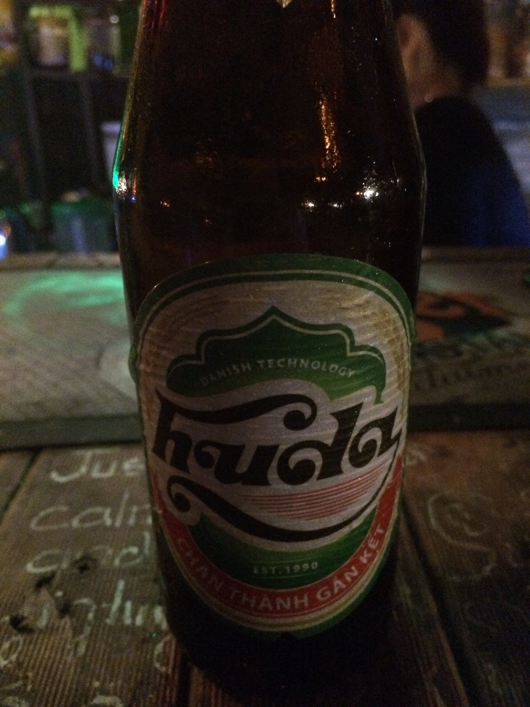
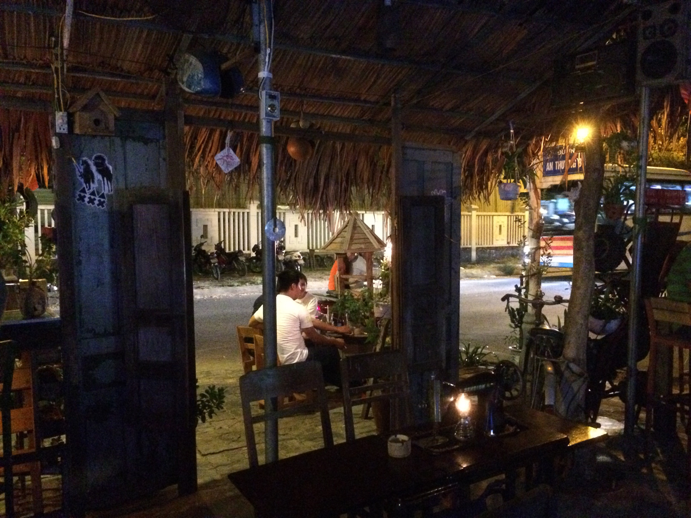
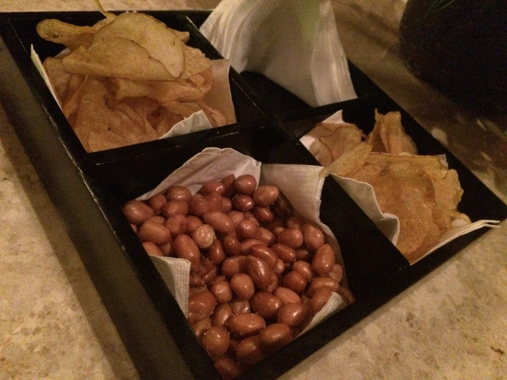

Absacker (auch bekannt als Nachttrunk)
Da es mein letzter Abend in Da Nang ist, möchte ich Ihnen meine Nachttrunk-Traditionen vorstellen, die ich in den letzten 3 Wochen entwickelt habe.
Wenn ich mit meinem kleinen Motorrad aus der Stadt zurückfahre, halte ich oft (sehr oft) an der Minsk-Bar für ein „letztes Bier“ (CZ-Leute wissen, was es bedeutet, wenn man „jeden pivo“ sagt). Es ist eine sehr entspannte und lockere Bar mit großartiger Musik (MP & Daniel, ihr würdet sie beide lieben – obwohl kein Ska). absacker1



Das Bier ist lokal. Ganz okay, man trinkt es hauptsächlich, weil es lokal ist.
Die andere Möglichkeit ist ein Nachttrunk an der Bar des Furama Hotels (wo ich wohne). Die Bar ist super stylisch, ebenso der Service und die Getränke. Seit ich hier den ersten Whiskey Sour hatte, bin ich süchtig. Irgendwie alkoholisch, weil einer nie genug ist, manchmal brauche ich drei, um zufrieden zu sein. Und dann ist man erledigt. Zumindest ich.


Da heute Abend mein letzter Abend ist, hatte ich beide Nachttrünke. Das wird morgen früh wehtun!